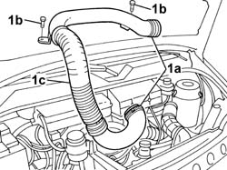

1048A31 RIGID PIPE CONNECTING AIR CLEANER TO INLET MANIFOLD RIGID PIPE R R
- Path
- Procedures > 10 ENGINE UNIT > 1048 ENGINE AIR SUPPLY CIRCUIT > 1048A VACUUM AIR CIRCUIT > 1048A31 RIGID PIPE CONNECTING AIR CLEANER TO INLET MANIFOLD RIGID PIPE R R
- Kind
- repair procedure (removal / refitting; the operation number is the code)
- Applies to
- engines: 2.0 16V; all production periods
- Interactive page
- https://sloeber94.github.io/elrnDB-fDct/en/#/244000787
Applies to: engines: 2.0 16V; all production periods
 Removing
Removing
 Refitting
Refitting1. Remove the fastening bands (1a) and undo the fixing nuts on the tappet cover (1b) and remove the rigid pipe (1c).

Applies to: engines: 2.0 16V; all production periods
Refitting
Removing- Place the rigid pipe in position and renew the fastening bands.
- Tighten the nuts fixing the rigid pipe to the tappet cover.
Topics that link to this page (10)
- 1004B12 POWER UNIT WITH MANUAL GEARBOX - R+R FOR VERSIONS WITH A/C
- 1016A20 SINGLE CAM COVER - R + R AND REPLACE GASKET
- 1016C11 SINGLE CYLINDER HEAD-R R GASKET FOR VERSIONS WITH AIR CONDITIONER
- 1028H11 PISTON CONNECTING ROD SET - R R
- 1036B10 OVERHEAD CAMSHAFT - R R ON VEHICLE
- 1036H10 VALVE TAPPETS - CHECK AND ADJUST CLEARANCE
- 1056B14 THROTTLE CASE - R + R
- 1056B38 STEPPING MOTOR ACTUATOR ON THROTTLE CASING - R + R
- 1056B46 INTAKE AIR TEMPERATURE SENSOR - R + R
- 1072B10 INLET MANIFOLD - R + R AND REPLACE SEAL